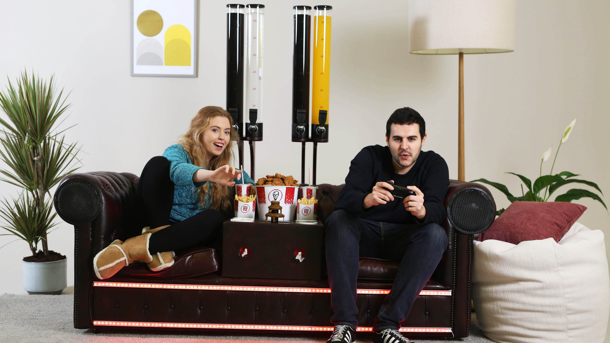

These games for couples


I first saw this game on the smartphone of the man and I was intrigued because I saw the mechanics of Tetris but the grid layout and game mechanics were unfamiliar to me. I had also remarked the coupon card of this french retail store I won't name. That’s only minutes after that I saw the wife of this man playing the same game and from here I learned that it was blockudoku a game I just came to know. but the syllabus Doku reminded me automatically of sudoku and the grid layout increased this similarity with sudoku. Here the game designers have leveraged analogy and created a new genre of game from two different games. That’s sometimes how new things are created, by coupling two different things with the hope that the new thing will remind us of at least one of the parent things and make us engage ourselves with it. This can be a very powerful design and system thinking that could be studied and developed and I am almost sure that evolution theory can help understand this methodology better. Coupling genres and categories for creating new genres and categories. That’s what we human beings are doing when we got married and found a family like this couple from which I learned blockudoku. Hope they will have a good and great family experience and good kids but soon after I learned this game from them I saw them both playing with no way for them to do it together and this really hurt me as a software engineer able to build game engines and gameplays. Seeing a couple playing the same game, each one with a smartphone with no way of doing it together is not something useful for the couple. Playing the same game while being connected and challenged in a way that makes the couple be more connected is way better. All of this reminded me that there lot of new things to do with the game industry.
I happen that I have read this article about software and how they are disconnected and why just hours before.
This has nothing to do with Book Dojo the mail-only startup publishing data-driven books and building book-driven platforms for book lovers and book communities.